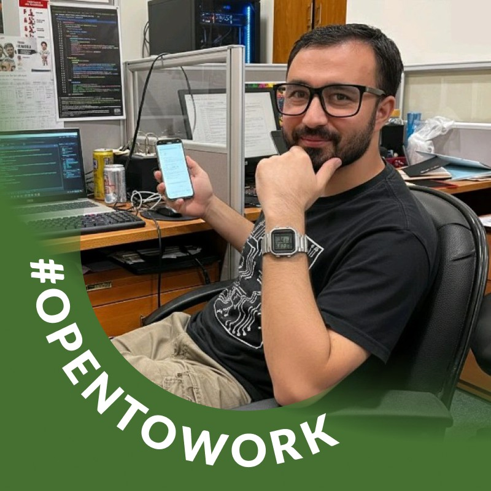

user@server:~$ ./whoami
Senior IT professional with 6+ years engineering enterprise infrastructure across banking, development, and education sectors. Expert in Cisco networking, Windows Server, VMware virtualization, core banking systems, and IT security compliance.
// about.txt
I'm Allauddin Qazi, a results-driven IT Infrastructure & Systems Administrator based in Pakistan with 6+ years of hands-on experience building, securing, and maintaining enterprise IT environments.
My expertise spans Cisco network engineering, Windows Server & Active Directory automation, VMware ESXi virtualization, Core Banking Systems (PIBAS, RTGS, CBS, LOS), Office 365 administration, pfSense firewall management, Veeam Backup & DR, and CCTV infrastructure — across banking, NGO, and education sectors.
I'm passionate about writing about technology — sharing real-world knowledge on networking, system administration, cybersecurity, and IT best practices through my blog.

// skills.conf
Technologies I work with daily across enterprise environments.
// career.log
A detailed track record built across banking, NGO, and education sectors.
Delivering mission-critical IT support across a nationwide microfinance banking network — ensuring zero-downtime core banking operations, SBP regulatory compliance, and seamless branch IT infrastructure.
Led IT operations for a major development-sector organization across multiple national sites — managing a team of IT staff and delivering enterprise-grade technical solutions under challenging field conditions.
Delivered comprehensive IT support and infrastructure management for a multi-campus education network serving 1000+ users — covering server administration, network maintenance, ICT lab setup, and user training.
Delivered high-volume helpdesk and field IT support in a fast-paced technology services environment — building strong expertise in network design, user support, device deployment, and IT operations management.
Entry-level technical role that established a strong practical foundation in hardware repair, software support, and network maintenance — the starting point of a 6+ year IT career.
// services.list
End-to-end IT infrastructure services I provide to organizations.
// blog.posts
Real-world IT guides from the field — networking, systems, security, and cloud.
// certificates.log
Verified credentials — click any certificate to view the original document.
// education.db
Academic foundation powering technical expertise.
// contact.sh
Open to senior IT roles, network engineering, and consulting opportunities.
Whether you need a hands-on network engineer, a reliable IT infrastructure lead, or a banking technology specialist — I bring 6+ years of real-world enterprise experience and a proven track record of delivering results. Let's build something solid together.